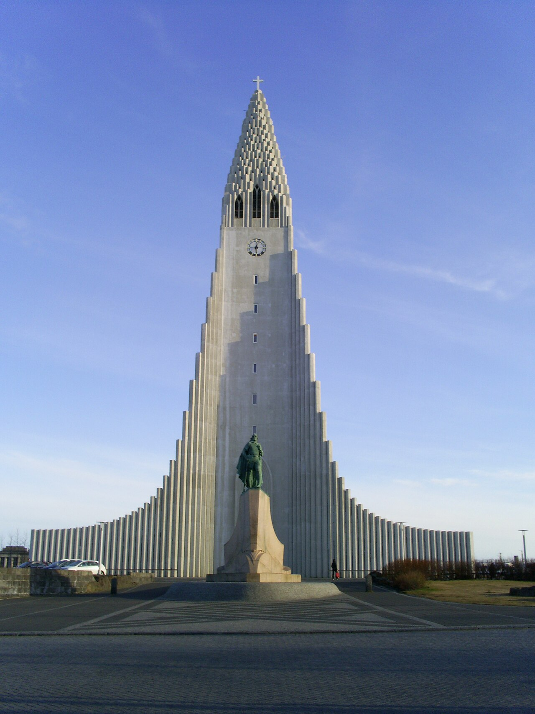
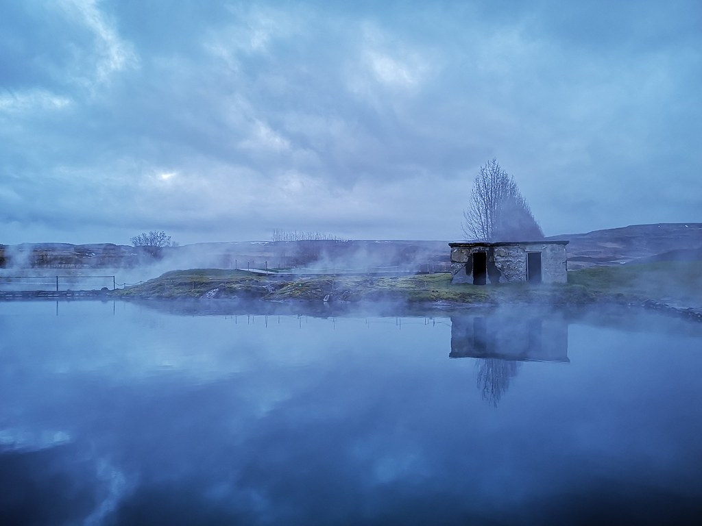
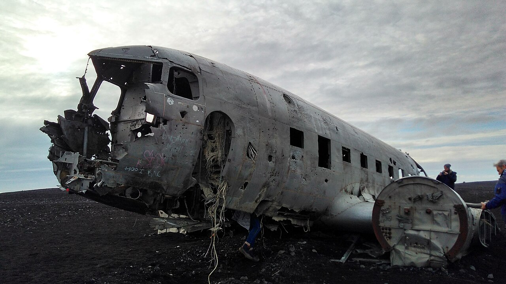
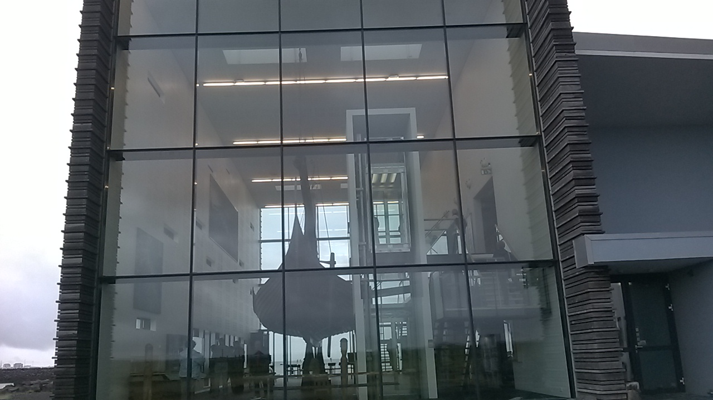
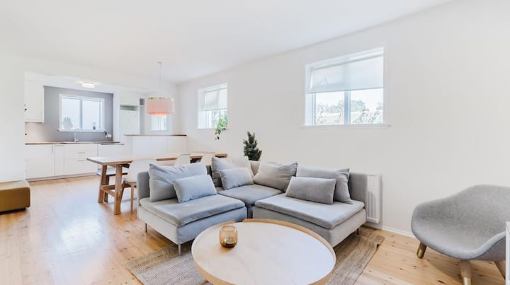
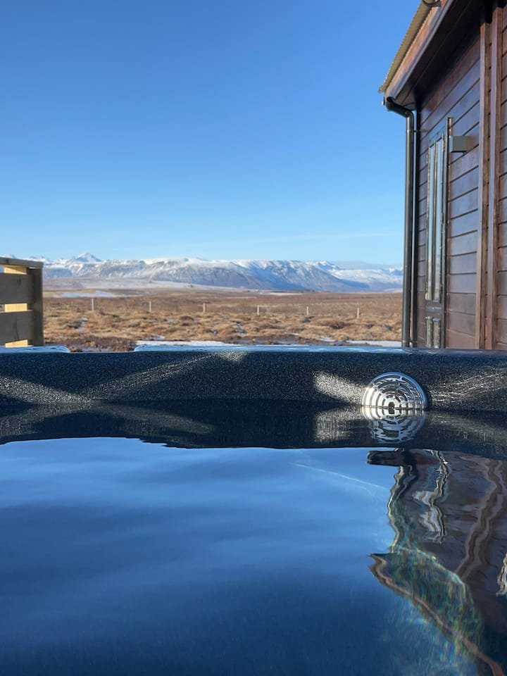
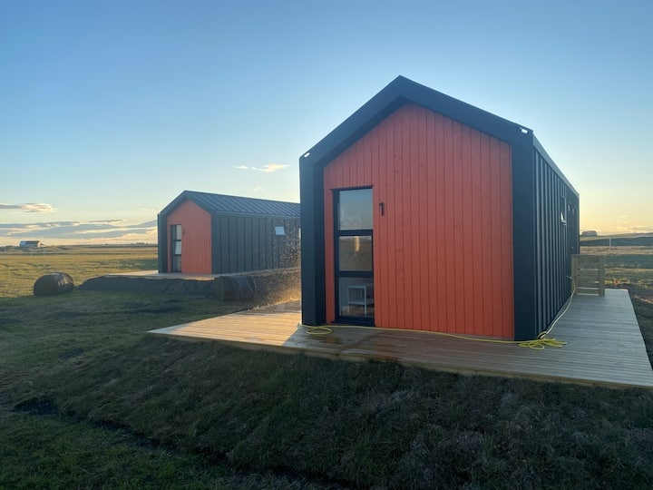
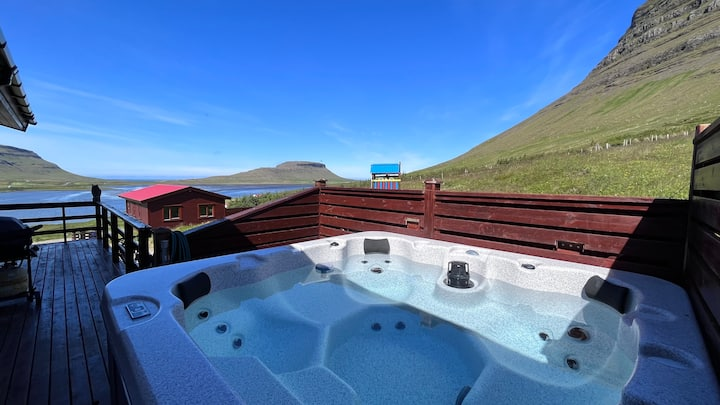
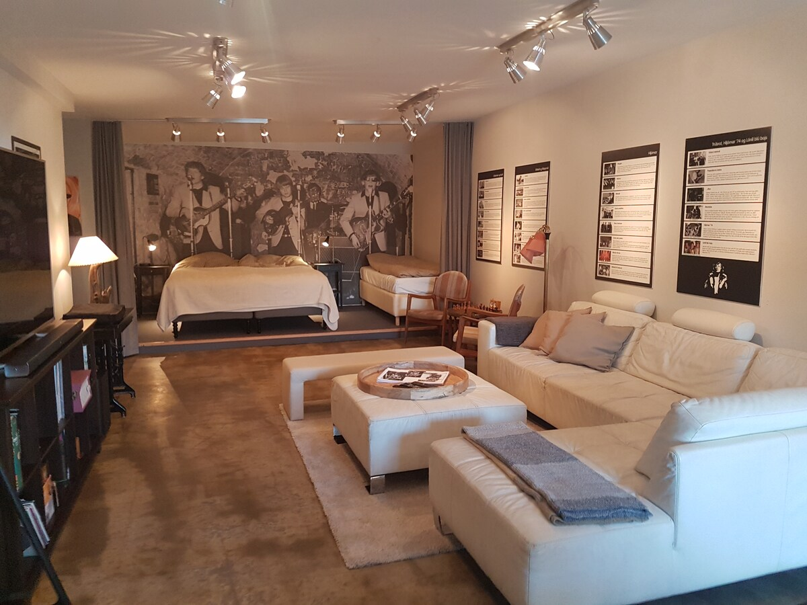

💱 เรทที่ใช้: 100 ISK ≈ 26 บาท (มิ.ย. 2026, ผันผวนได้) · 🎟️ จุดธรรมชาติส่วนใหญ่ เข้าฟรี เสียหลักๆ คือค่าจอด/สปา/ล่องเรือ · ราคาต่อผู้ใหญ่ ควรเช็กเว็บทางการอีกครั้ง
✅ ยืนยันจากใบจอง (วันที่ถูกต้อง)
- ✈️ ถึง KEF 07:50 · ศุกร์ 24 ก.ค. · บินกลับ 08:40 · เสาร์ 1 ส.ค. 2026
- 🚗 Toyota RAV4 · รับ 24 ก.ค. 09:00 · คืน 1 ส.ค. 07:00 ที่ KEF · ⚠️ คืนรถแล้วรีบเข้าเช็กอิน (เหลือ ~1 ชม. 40 นาที)
✈️ เที่ยวบิน — Finnair (ผ่านเฮลซิงกิ)
🎫 Finnair ผ่านเฮลซิงกิ · 3 ผู้โดยสาร · ชั้นประหยัด · โหลดใต้ท้อง 23 กก./คน + ถือขึ้นเครื่อง (ถือ+ของส่วนตัวรวม ≤ 8 กก., 55×40×23 ซม.)
🛫 ขาไป · กรุงเทพฯ → เรคยาวิก
| เที่ยวบิน | ออกเดินทาง | ถึง |
|---|
Finnair AY142
A350-900 | 🇹🇭 BKK 07:05
พฤ 23 ก.ค. | 🇫🇮 HEL 15:25
พฤ 23 ก.ค. |
| ⏳ ต่อเครื่องที่เฮลซิงกิ 15 ชม. 45 นาที — ค้างคืน เที่ยวเมือง/พักได้ |
Finnair AY991
737-800 | 🇫🇮 HEL 07:10
ศ 24 ก.ค. | 🇮🇸 KEF 07:50
ศ 24 ก.ค. |
🚗 ลงเครื่อง 07:50 → รับรถ Hertz 09:00 ที่ KEF พอดี → เริ่มทริป!
🛬 ขากลับ · เรคยาวิก → กรุงเทพฯ
| เที่ยวบิน | ออกเดินทาง | ถึง |
|---|
Finnair AY992
737-800 | 🇮🇸 KEF 08:40
ส 1 ส.ค. | 🇫🇮 HEL 15:05
ส 1 ส.ค. |
| ⏳ ต่อเครื่องที่เฮลซิงกิ 23 ชม. 10 นาที — ค้างคืน เที่ยวเฮลซิงกิได้เกือบเต็มวัน 🇫🇮 |
Finnair AY141
A350-900 | 🇫🇮 HEL 14:15
อา 2 ส.ค. | 🇹🇭 BKK 05:30
จ 3 ส.ค. |
🚗 คืนรถ Hertz 07:00 → เช็กอินบิน 08:40 · ⚠️ ค้างเฮลซิงกิ 1 คืน (2 ส.ค.) ถึงไทยเช้า 3 ส.ค.
| คืน | วันที่ | นอนที่ |
|---|
| 1 | ศ. 24 ก.ค. | เรคยาวิก |
| 2–3 | ส.–อา. 25–26 ก.ค. | Golden Circle (Grímsnes) ✅จองแล้ว |
| 4–5 | จ.–อ. 27–28 ก.ค. | Hvolsvöllur ✅จองแล้ว |
| 6 | พ. 29 ก.ค. | Grundarfjörður (Kirkjufell) ✅จองแล้ว |
| 7–8 | พฤ.–ศ. 30–31 ก.ค. | Keflavík · Rokkheimur Studio ✅จองแล้ว |
| — | ส. 1 ส.ค. | ✈️ คืนรถ 07:00 · บิน 08:40 |
วันที่ 1 · ศุกร์ 24 ก.ค. — เรคยาวิก (Reykjavík)
เครื่องลง 07:50 → รับรถ 09:00 → เข้าเมือง · วันแรกเอาเบาๆ
🚗 KEF→เมือง ~45 นาที🛏️ นอนเรคยาวิก

Hallgrímskirkja (ฮัตล์กรีมสเคียคยา)
⏱️ 45–60 นาที💰 เข้าฟรี🔭 หอคอย ~365 บาท
โบสถ์สูงสัญลักษณ์เมือง ทรงเสาหินบะซอลต์ ขึ้นลิฟต์ไปหอคอยชมวิวหลังคาสีสด + อ่าวเมือง 360°
🧭 นำทาง
Sun Voyager (ซัน วอยาเจอร์)
⏱️ 15–20 นาที💰 ฟรี
ประติมากรรมเรือไวกิ้งสเตนเลสริมทะเล จุดถ่ายรูปคลาสสิก วิวภูเขา Esja เป็นฉากหลัง สวยช่วงแสงเย็น
🧭 นำทาง
Harpa Concert Hall (ฮาร์ปา)
⏱️ 20–30 นาที💰 เข้าโถงฟรี
หอแสดงคอนเสิร์ตผนังกระจกรังผึ้งหลากสี เดินชมโถงด้านในได้ฟรี ติดท่าเรือเก่า
🧭 นำทาง
ถนน Laugavegur + ถนนสายรุ้ง (เลากาเวกูร์)
⏱️ 60–90 นาที💰 ฟรี (ช้อป/กาแฟตามใจ)
ถนนคนเดินสายหลัก ร้านของฝาก คาเฟ่ ปลายถนนสายรุ้งมองตรงไปเห็นโบสถ์ Hallgrímskirkja พอดี · แวะซูเปอร์ Bónus ซื้อของเข้าครัว
🧭 นำทาง
Perlan (เพียร์ตลัน) — เสริม
เสริม⏱️ 1.5–2 ชม.💰 ~1,560 บาท
พิพิธภัณฑ์ธรรมชาติ: ถ้ำน้ำแข็งจำลอง, ท้องฟ้าจำลองแสงเหนือ, ภูเขาไฟ + ดาดฟ้าชมเมือง 360°
🧭 นำทาง
วันที่ 2 · เสาร์ 25 ก.ค. — Golden Circle → Grímsnes
3 ไฮไลต์คลาสสิก แล้วขับลงใต้
🚗 รวม ~3 ชม.📍 4 จุด🛏️ นอน Grímsnes (Þúfukot)
อุทยาน Þingvellir (ธิงเวลลีร์)
⏱️ 60–90 นาที💰 เข้าฟรี🅿️ จอด ~260 บาท
รอยแยกแผ่นทวีปอเมริกาเหนือ-ยูเรเชีย เดินหุบเขา Almannagjá + จุดกำเนิดรัฐสภาแรกของโลก มรดกโลก
🧭 นำทาง
Geysir · Strokkur (เกย์ซีร์ · สโตรกกูร์)
⏱️ 30–45 นาที💰 ฟรี
บ่อน้ำพุร้อน Strokkur พุ่งสูง 15–20 ม. ทุก ~5–10 นาที ตั้งกล้องรอถ่ายได้เลย
🧭 นำทาง
น้ำตก Gullfoss (กูลล์ฟอสส์)
⏱️ 30–45 นาที💰 ฟรี (จอดฟรี)
น้ำตก 2 ชั้นขนาดยักษ์ พลังน้ำมหาศาล มีทางเดินหลายระดับ + คาเฟ่ (ซุปแกะดัง)
🧭 นำทาง
ปล่องภูเขาไฟ Kerið (เคริด) — เสริม
เสริม⏱️ 30 นาที💰 ~180 บาท
ปล่องภูเขาไฟที่มีทะเลสาบสีฟ้าเทอร์คอยซ์ก้นปล่อง ขอบสีแดงสนิม เดินรอบขอบได้ อยู่บนเส้นทางลงใต้
🧭 นำทาง

Secret Lagoon (ซีเคร็ต ลากูน) — เสริม
เสริม⏱️ 1.5–2 ชม.💰 ~780 บาท
บ่อน้ำร้อนธรรมชาติเก่าแก่สุดของไอซ์แลนด์ ราคาย่อมเยากว่า Blue Lagoon มาก บรรยากาศบ้านๆ ที่ Flúðir
🧭 นำทาง
🛏️ นอน: Þúfukot · Grímsnes (คืน 1/2) — เข้าครัวทำกับข้าว
วันที่ 3 · อาทิตย์ 26 ก.ค. — น้ำตกใต้ + ซากเครื่องบิน
ฐาน Hella · ขับสั้น ไป-กลับ
🚗 รวม ~3.5 ชม. (จาก Grímsnes)📍 3–4 จุด🛏️ นอน Grímsnes
น้ำตก Seljalandsfoss (เซลยาลันส์ฟอสส์)
⏱️ 45–60 นาที💰 เข้าฟรี🅿️ จอด ~210 บาท
เดินลอดหลังม่านน้ำได้ (ทางลื่น เตรียมเสื้อกันฝน) + เดินเลียบผา ~5 นาทีถึงน้ำตกซ่อน Gljúfrabúi ในซอกหิน
🧭 นำทาง
น้ำตก Skógafoss (สโกกาฟอสส์)
⏱️ 30–45 นาที💰 ฟรี
น้ำตกกว้าง 25 ม. สูง 60 ม. เดินเข้าใกล้ได้ (มักมีรุ้ง) หรือขึ้นบันได ~370 ขั้นไปจุดชมวิวบน
🧭 นำทาง

ซากเครื่องบิน Sólheimasandur DC-3 (โซลเฮมาซันดูร์)
⏱️ 1.5–2.5 ชม.🅿️ จอด ~195 บาท🚌 ชัตเทิล ~885 บาท
ซากเครื่องบินทหารสหรัฐฯ ตกปี 1973 บนหาดทรายดำโล่ง จุดถ่ายรูปสุดเท่ (ปี 2025 เพิ่มลำที่ 2) · แนะนำนั่งชัตเทิล (ทุก ~30 นาที 10:00–16:30) แทนเดิน ~4 กม./ทาง
🧭 นำทาง (ลานจอด)
ธารน้ำแข็ง Sólheimajökull (โซลเฮมาเยอคุตล์) — เสริม
เสริม⏱️ 45–60 นาที🅿️ จอด ~195 บาท
ลิ้นธารน้ำแข็งเข้าถึงง่าย เดินจากลานจอด ~15–20 นาทีถึงจุดชม (อย่าเดินขึ้นน้ำแข็งเองถ้าไม่มีไกด์)
🧭 นำทาง
🛏️ นอน: Þúfukot · Grímsnes (คืน 2/2)
วันที่ 4 · จันทร์ 27 ก.ค. — Vík + พัฟฟิน → Hvolsvöllur
เที่ยวโซน Vík แล้วขับไปตะวันออก
🚗 รวม ~3.5 ชม.📍 4 จุด🛏️ นอน Hvolsvöllur
🐧 Dyrhólaey (ดีร์โฮลาเอย์) — จุดชมพัฟฟิน
⏱️ 45–60 นาที💰 ฟรี
แหลมหินโค้งธรรมชาติ + จุดชมพัฟฟินบนบกที่ดีสุดของชายฝั่งใต้ (ปลาย ก.ค. ยังทันปลายฤดู) เห็นเยอะสุดเช้าตรู่/เย็น · พกกล้องส่องไกล + เสื้อกันลม
🧭 นำทาง
หาดทรายดำ Reynisfjara (เรย์นิสฟยารา)
⏱️ 45 นาที💰 ฟรี (จอดมีค่าเล็กน้อย)
หาดทรายดำ เสาหินบะซอลต์หกเหลี่ยม ถ้ำหิน + เสาหิน Reynisdrangar กลางทะเล · ⚠️ ระวังคลื่น sneaker wave อย่ายืนใกล้น้ำ
🧭 นำทาง
หมู่บ้าน Vík (วิก)
⏱️ 45–60 นาที💰 ฟรี (จุดกินข้าว)
หมู่บ้านเล็กใต้สุด โบสถ์แดงบนเนินวิวสวย มีซูเปอร์ (Krónan), ปั๊ม, ร้านอาหาร จุดพักเที่ยงกำลังดี
🧭 นำทาง
แคนยอน Fjaðrárgljúfur (ฟยาดราร์กลยูวูร์)
⏱️ 45–60 นาที💰 ฟรี
หุบผาลึก ~100 ม. คดเคี้ยว ผนังปกคลุมมอสเขียว มีทางเดินเลียบขอบผาไปหลายจุดชมวิว อยู่ก่อนถึง Hof
🧭 นำทาง
🛏️ นอน: Hamar – Puffin 1 · Hvolsvöllur (คืน 1/2) — ⚠️ ขับกลับจาก Fjaðrárgljúfur ~1.5 ชม.
วันที่ 5 · อังคาร 28 ก.ค. — ⭐ Jökulsárlón + Skaftafell
ไฮไลต์ทริป · ไป-กลับจาก Hvolsvöllur · วันขับไกลสุด — ออกก่อน 08:00
🚗 รวม ~6.5 ชม. (ไป-กลับจาก Hvolsvöllur)📍 4 จุด🛏️ นอน Hvolsvöllur
⭐ ทะเลสาบธารน้ำแข็ง Jökulsárlón (เยอคุลซาร์ลอน)
⏱️ ชม 45–60 นาที💰 ชมฟรี🚤 ล่องเรือ ~1,850 บาท
ทะเลสาบที่มีภูเขาน้ำแข็งลอยล่อง บางครั้งมีแมวน้ำ · ล่องเรือ (เสริม): สะเทินน้ำสะเทินบก ~ISK 7,100 (~1,850฿) / Zodiac ~ISK 11,900+ (~3,100฿) — ควรจองล่วงหน้า
🧭 นำทาง
Diamond Beach (ไดมอนด์ บีช / หาดเพชร)
⏱️ 30–45 นาที💰 ฟรี
ก้อนน้ำแข็งใสเกยหาดทรายดำ วิบวับเหมือนเพชร อยู่ฝั่งตรงข้ามถนนจาก Jökulsárlón เดินถึงกัน
🧭 นำทาง
Skaftafell + น้ำตก Svartifoss (สกาฟตาเฟตล์ / สวาร์ติฟอสส์)
⏱️ 2–2.5 ชม. (เดิน)💰 เข้าฟรี🅿️ จอด ~270 บาท
เดินเทรล ~1.5 กม. (ขึ้นเนิน) ไปน้ำตก Svartifoss ที่ล้อมด้วยเสาหินบะซอลต์ดำเหมือนออร์แกน (ค่าจอดลด 50% ถ้าจ่ายที่ Jökulsárlón วันเดียวกัน)
🧭 นำทาง
⭐ แคนยอน Múlagljúfur (มูลาคลยูวูร์) — จุดใหม่! 📸
⏱️ 1.5–2 ชม. (เดิน)💰 เข้าฟรีเสริม
แคนยอนลับสุดปัง เขียวมอสทั้งหุบ มีน้ำตก Hangandifoss ไหลลงเหว วิวเปิดออกทะเล/ธารน้ำแข็ง 🏔️ · เดินเทรลขึ้นเนิน ~1.5 กม./เที่ยว (ทางดินอาจแฉะ ใส่รองเท้ากันลื่น) · อยู่ริมทางระหว่าง Skaftafell ↔ Jökulsárlón เลี้ยวเข้าถนนลูกรังสั้นๆ แวะได้ไม่อ้อม · หน้าร้อนฟ้าสว่างถึงเที่ยงคืน เที่ยวช่วงค่ำได้คนน้อย
🧭 นำทาง (จุดจอด)
🛏️ นอน: Hamar – Puffin 1 · Hvolsvöllur (คืน 2/2) — ⚠️ วันขับไกลสุดของทริป ออกเช้า (≤08:00) กลับค่ำ
วันที่ 6 · พุธ 29 ก.ค. — ขับสู่ Snæfellsnes → Kirkjufell
เช็กเอาต์ก่อน 11:00 · ขับยาว ~330 กม. (~4.5 ชม.) แวะเที่ยวระหว่างทาง · เย็นถ่าย Kirkjufell แสงทอง
🚗 รวม ~4.5 ชม.📍 4 จุด🛏️ นอน Grundarfjörður ✅
แวะพัก: Borgarnes (บอร์กาเนส)
⏱️ 45–60 นาที · ~เที่ยง💰 ฟรี (ค่าอาหารตามใจ)
เมืองริมฟยอร์ดประตูสู่ตะวันตก · กินข้าวเที่ยง + ซื้อของเข้าครัวที่ Bónus/Netto (ซูเปอร์ใหญ่สุดท้ายก่อนเข้าคาบสมุทร)
🧭 นำทาง
Gerðuberg (แกร์ดูแบร์ก)
⏱️ 20–30 นาที💰 ฟรี
กำแพงเสาหินบะซอลต์หกเหลี่ยมเรียงแถวยาวเป็นกิโล เหมือนคนสร้าง จอดริมทางเดินถึงตีนผาได้เลย
🧭 นำทาง
🦭 Ytri Tunga (อีตรี ทุงกา) — หาดแมวน้ำ
⏱️ 30–45 นาที🅿️ ~200 บาท/คัน
หาดทรายทองที่แมวน้ำ harbor seal ชอบนอนอาบแดดบนโขดหิน โอกาสเจอสูงมากช่วงหน้าร้อน เอากล้องซูมมาด้วย · ห้ามเข้าใกล้เกิน 50 ม.
🧭 นำทาง
⭐ เย็น: Kirkjufell + Kirkjufellsfoss (คีร์คยูเฟตล์)
⏱️ 1–1.5 ชม. · แสงสวย 20:00–22:00🅿️ ~180 บาท/คัน
ภูเขาทรงหมวกแม่มดที่ถูกถ่ายรูปมากสุดในไอซ์แลนด์ (Game of Thrones) + น้ำตกหน้าภูเขาเป็นฉากคลาสสิก · ห่างที่พักแค่ ~5 นาที พระอาทิตย์ตก ~22:40 ไม่ต้องรีบ
🧭 นำทาง
🛏️ นอน: Saból 2 – Kirkjufell Cottage · Grundarfjörður — มีฮอตทับส่วนตัว เช็กอิน 15:00 (lockbox)
วันที่ 7 · พฤหัส 30 ก.ค. — วนอุทยาน Snæfellsjökull → Keflavík
เช็กเอาต์ก่อน 11:00 · วนปลายคาบสมุทรเก็บ 6 จุด แล้วขับเข้า Keflavík ค่ำ (~2 ชม. 45 น.)
🚗 รวม ~360 กม. / ขับ ~4.5 ชม.📍 6 จุด🛏️ นอน Keflavík ✅จองแล้ว
Saxhóll Crater (ซักซ์โฮตล์)
⏱️ 30 นาที💰 ฟรี
ปล่องภูเขาไฟอายุ 3–4 พันปี มีบันไดเหล็กขึ้นถึงปากปล่อง ~10 นาที วิวทุ่งลาวา 360° รอบทิศ
🧭 นำทาง
⭐ Djúpalónssandur (ดยูปาลอนส์ซันดูร์)
⏱️ 1–1.5 ชม.💰 ฟรี
หาดกรวดดำมนกลม "ไข่มุกดำ" + ซากเรือประมงอังกฤษปี 1948 กระจายทั้งหาด + หินยกกำลัง 4 ก้อนของลูกเรือยุคเก่า (23–154 กก. ลองยกได้!) · คลื่นแรง ห้ามลงน้ำ
🧭 นำทาง
Lóndrangar (โลนดรังการ์)
⏱️ 20–30 นาที💰 ฟรี
แท่งหินภูเขาไฟคู่สูง 75 ม. ปักกลางหน้าผาริมทะเล เดินจากลานจอดไปจุดชมวิว 5 นาที นกทะเลทำรังเต็มผา
🧭 นำทาง
เที่ยง: Hellnar (เฮตล์นาร์) — คาเฟ่ริมอ่าว
⏱️ ~1 ชม.💰 ซุปปลา ~650 บาท
หมู่บ้านประมงเก่าใต้ธารน้ำแข็ง Snæfellsjökull · กินข้าวเที่ยงที่ Fjöruhúsið คาเฟ่ริมอ่าวชื่อดังเรื่องซุปปลา วิวหน้าผา Valasnös
🧭 นำทาง
⭐ Cliff walk: Hellnar → Arnarstapi (อาร์นาร์สตาปี)
⏱️ ไป-กลับ ~2 ชม. (2.5 กม./เที่ยว)💰 ฟรี
เส้นเดินเลียบผาลาวาสวยสุดของคาบสมุทร ผ่านซุ้มหินโค้ง Gatklettur + เสาหิน + โพรงถ้ำ นกนางนวล Arctic tern บินว่อน · ขี้เกียจเดินไกล: ขับไป Arnarstapi แล้วเดินวนสั้นๆ แถว Gatklettur ก็ได้
🧭 นำทาง
Búðakirkja (บูดาเคียคยา) — โบสถ์ดำ
⏱️ 20–30 นาที💰 ฟรี
โบสถ์ไม้สีดำปี 1847 โดดเดี่ยวกลางทุ่งลาวา Búðahraun ฉากหลังธารน้ำแข็ง จุดถ่ายรูปสุดท้ายก่อนอำลาคาบสมุทร → จากนี้ขับยาวเข้า Keflavík ~2 ชม. 45 น. (แวะพัก Borgarnes ได้)
🧭 นำทาง
🛏️ นอน: Keflavík · Rokkheimur Studio (คืน 1/2) — lockbox เข้าเอง ถึง ~20:30–21:00
วันที่ 8 · ศุกร์ 31 ก.ค. — Reykjanes + Keflavík + Blue Lagoon 20:00
เที่ยวใกล้สนามบิน → แช่บ่อน้ำร้อนรอบ 2 ทุ่ม (Best Rate)
🚗 รวม ~1.5 ชม.📍 6 จุด🛏️ นอน Keflavík
สะพานเชื่อมทวีป Miðlína (มิดลีนา)
⏱️ 20–30 นาที💰 ฟรี
สะพานเดินข้ามรอยแยกระหว่างแผ่นเปลือกโลกอเมริกาเหนือ–ยูเรเชีย เดินข้ามทวีปในไม่กี่ก้าว
🧭 นำทาง
Gunnuhver (กุนนูห์เวร์)
⏱️ 20–30 นาที💰 ฟรี
บ่อโคลนเดือด + ไอน้ำพวยพุ่งใหญ่สุดของไอซ์แลนด์ มีทางเดินไม้ให้ชมใกล้ๆ (ระวังไอร้อน)
🧭 นำทาง
ประภาคาร Reykjanesviti + หน้าผา Valahnúkamöl
⏱️ 30–45 นาที💰 ฟรี
ประภาคารเก่าแก่ที่สุดของไอซ์แลนด์บนเนิน + หน้าผาหินลาวา เสาหินกลางทะเล นกทะเลเยอะ วิวมหาสมุทรสุดขอบ
🧭 นำทาง
Brimketill (บริมเคทิล) — เสริม
เสริม⏱️ 15–20 นาที💰 ฟรี
แอ่งหินลาวารูปอ่างธรรมชาติริมทะเล คลื่นซัดเข้าสวยงาม มีจุดชมวิวปลอดภัย (อย่าลงใกล้น้ำ)
🧭 นำทาง
The Giantess in the Cave (ถ้ำยักษ์สาว)
⏱️ 20–30 นาที💰 ฟรี (10:00–17:00)
ถ้ำจำลองริมท่าเรือ Keflavík มีนางยักษ์ใจดีจากนิทานเด็กนอนกรนในเก้าอี้โยก ของยักษ์ขนาดใหญ่ ถ่ายรูปสนุก เหมาะทุกวัย
🧭 นำทาง

Viking World (ไวกิ้ง เวิลด์) — เสริม
เสริม⏱️ 45–60 นาที💰 ~390 บาท (เช็กเว็บ)
พิพิธภัณฑ์เรือไวกิ้งจำลองขนาดเท่าจริง "Íslendingur" ที่เคยแล่นข้ามมหาสมุทรจริง + นิทรรศการยุคไวกิ้ง มีคาเฟ่
🧭 นำทาง
⭐ Blue Lagoon (บลูลากูน) — รอบ 20:00 (Best Rate)
⏱️ 2–2.5 ชม.💰 Comfort จาก ~3,120 บาท
บ่อน้ำร้อนสีฟ้าน้ำนม แช่ท่ามกลางแสง midnight sun · จองรอบ 20:00 · 31 ก.ค. ล่วงหน้า (เต็มเร็ว) · ออกจากน้ำ 22:30 ปิด 23:00 · กลับที่พัก ~25 นาที · 🌋 เช็กสถานะภูเขาไฟที่ safetravel.is ก่อนไป
🧭 นำทาง
🛏️ นอน: Keflavík · Rokkheimur Studio (คืน 2/2) · พรุ่งนี้คืนรถ 07:00 บิน 08:40
🏠 ที่พัก (จองครบ 5 ที่ / 8 คืน ✅)
1) ✅ เรคยาวิก · คืน ศ 24 ก.ค. — Quiet Apartment Very Near Downtown
จองผ่าน Airbnb · โฮสต์ตอบไวมาก

- 📋 คำแนะนำเข้าพัก: ไม่ใช่ self check-in — ทักโฮสต์ในแอป Airbnb แจ้งเวลาถึงล่วงหน้า เพื่อนัดรับกุญแจ · ⚠️ ช่วงหน้าร้อน 2026 มีงานก่อสร้างข้างเคียงเสียงดังช่วงกลางวันวันธรรมดา (เราถึงวันศุกร์ เย็นแล้วน่าจะเงียบ)
- ลักษณะ: อะพาร์ตเมนต์ทั้งหลัง (สูงสุด 4 คน) ย่านเงียบฝั่งตะวันตกของเมืองเก่า ถนน Unnarstígur เดินเข้าใจกลางเมืองได้
- เช็กอิน/เอาต์: 15:00 / 11:00 — ถึง KEF 07:50 รับรถ 09:00 เข้าเมือง ~45 นาที ถึงก่อนเช็กอิน → จอดรถแล้วเที่ยวเมืองรอได้ (ฝากถามโฮสต์เรื่อง early check-in / ฝากกระเป๋า)
- เดินเที่ยว: Hallgrímskirkja ~15 นาที · Laugavegur ~12 นาที · Harpa/Sun Voyager ~15 นาที · ริมทะเลสาบ Tjörnin ~8 นาที — คืนแรกไม่ต้องใช้รถเลย
- ของกิน/ซูเปอร์: Bónus สาขา Hallveigarstígur (เดิน ~10 นาที) ตุนมื้อเช้า · ร้านฮอตด็อก Bæjarins Beztu ใกล้ท่าเรือ
- ที่อยู่: Unnarstígur 4, 101 Reykjavík
🧭 นำทาง
2) ✅ Golden Circle (Grímsnes) · คืน ส–อา 25–26 ก.ค. — Þúfukot
จองผ่าน Airbnb · ⭐ Superhost

- 📋 คำแนะนำเข้าพัก: 🛁 มีฮอตทับวิวภูเขา! เอาชุดว่ายน้ำไปด้วย · ไม่ใช่ self check-in — โฮสต์ตอบช้าได้ถึง 1 วัน ทักแจ้งเวลาถึงล่วงหน้าตั้งแต่เนิ่น ๆ · ไม่มีเครื่องเตือน CO ติดตั้ง (จุดเตาแก๊ส/เตาผิงระวังหน่อย)
- ลักษณะ: บ้านชนบททั้งหลัง (สูงสุด 4 คน) กลางทุ่ง Grímsnes ใจกลางโซน Golden Circle เงียบสงบ วิวเปิดโล่ง กลางคืนถ้าฟ้าใสเห็นแสงเที่ยงคืนสวย
- เช็กอิน/เอาต์: 15:00 / 12:00 (เที่ยง — สายกว่าที่อื่น) เช้าวันที่ 27 ไม่ต้องรีบ
- ระยะขับจากที่พัก: Kerið ~15 นาที · Geysir ~35 นาที · Gullfoss ~45 นาที · Þingvellir ~40 นาที · Secret Lagoon (Flúðir) ~30 นาที — วันที่ 26 ลงใต้ไปน้ำตก Seljalandsfoss ~50 นาที
- ของกิน/ซูเปอร์: ตุนของจาก Bónus Selfoss (~20 นาที) ก่อนเข้าที่พัก มีครัวครบ ทำกับข้าวประหยัดได้ 2 คืนเต็ม
- การหาที่พัก: ไม่มีเลขที่ถนน — จุดหมายในแอปนำทางใช้ชื่อ "Þúfukot" หรือเปิดพิกัดจากแอป Airbnb ก่อนออกจากเมือง (สัญญาณมือถือแถวนั้นมีแต่เผื่อไว้)
🧭 นำทาง
3) ✅ Hvolsvöllur · คืน จ–อ 27–28 ก.ค. — Hamar – Puffin 1
จองผ่าน Airbnb · ⭐ Superhost · โฮสต์ตอบไวมาก

- 📋 คำแนะนำเข้าพัก: ✅ Self check-in ผ่าน lockbox — รหัสมาในแอปก่อนวันเข้าพัก มาถึงดึกแค่ไหนก็เข้าได้ · เป็น tiny home ห่างหมู่บ้าน ~15 นาที ซื้อของที่ Krónan ก่อนขึ้นบ้าน · ไม่มีเครื่องเตือน CO
- ลักษณะ: บ้านหลังเล็กในฟาร์ม Hamar (สูงสุด 3 คนพอดี) นอกเมือง Hvolsvöllur ฐานยุทธศาสตร์ชายฝั่งใต้ วิวทุ่งฟาร์ม + ภูเขา Eyjafjallajökull
- เช็กอิน/เอาต์: 15:00 / 11:00 — วันที่ 27 มาจาก Grímsnes แวะเที่ยว Vík ก่อนเข้าเช็กอินตอนเย็นได้ (Fjaðrárgljúfur → กลับมาที่พัก ~1.5 ชม.)
- ระยะขับจากที่พัก: Seljalandsfoss ~20 นาที · Skógafoss ~35 นาที · Vík ~1 ชม. · ⚠️ วันที่ 28 ไป Jökulsárlón ไกล ~3 ชม./เที่ยว — ออกก่อน 08:00
- ของกิน/ซูเปอร์: Krónan Hvolsvöllur (~10 นาที) + ปั๊ม N1 มีของกิน · ร้านแนะนำในเมือง: Eldstó Art Café
- ที่อยู่: Hamar, 861 Hvolsvöllur — ทางเข้าฟาร์มอยู่นอกถนนหลัก สังเกตป้าย "Hamar" เปิดพิกัดจากแอป Airbnb ประกอบ
🧭 นำทาง
4) ✅ Grundarfjörður (Kirkjufell) · คืน พ 29 ก.ค. — Hálsaból 2 – Kirkjufell Cottage
จองผ่าน Airbnb · ⭐ Superhost · โฮสต์ตอบไวมาก

- 📋 คำแนะนำเข้าพัก: ✅ Self check-in ผ่าน lockbox ไม่ต้องนัดโฮสต์ · 🛁 ฮอตทับส่วนตัววิว Kirkjufell (ดูรูป!) เอาชุดว่ายน้ำเตรียมไว้ · อยู่ห่าง Kirkjufellsfoss แค่ไม่กี่ร้อยเมตร — เดิน/ขับแป๊บเดียวถึงจุดถ่ายรูป
- ลักษณะ: คอตเทจทั้งหลัง (สูงสุด 5 คน) ริมถนน Snæfellsnesvegur ชานเมือง Grundarfjörður · 🛁 ฮอตทับส่วนตัว — แช่น้ำร้อนชมวิวภูเขาหลังขับรถมาทั้งวัน คุ้มมาก
- เช็กอิน/เอาต์: 15:00 / 11:00 · self check-in ผ่าน lockbox — รหัสจะมาในแอป Airbnb ก่อนวันเข้าพัก ไม่ต้องนัดโฮสต์ มาถึงกี่โมงก็เข้าได้
- ไฮไลต์: Kirkjufell + Kirkjufellsfoss ห่างแค่ ~5 นาที — เย็นวันที่ 29 กินข้าว แช่ฮอตทับ แล้วค่อยออกไปถ่ายช่วง 20:00–22:00 แสงสวยสุด (อาทิตย์ตก ~22:40)
- ของกิน/ซูเปอร์: Kjörbúðin ในเมือง Grundarfjörður (~5 นาที) · ร้านปลาแนะนำ Bjargarsteinn Mathús วิวอ่าว (จองล่วงหน้าถ้าไปได้)
- ที่อยู่: Snæfellsnesvegur, 350 Grundarfjörður — อยู่ริมถนนหลัก 54 หาไม่ยาก
🧭 นำทางเข้าเมือง
5) ✅ Keflavík · คืน พฤ–ศ 30–31 ก.ค. — Rokkheimur Studio Apartment
จองผ่าน Airbnb

- 📋 คำแนะนำเข้าพัก: 🔑 Self check-in ด้วย lockbox — เข้าได้เองไม่ต้องรอโฮสต์ · วันที่ 30 มาถึงจาก Snæfellsnes ~20:30–21:00 เข้าได้เลย · เช้าวันที่ 1 ส.ค. ออกตี 5 ครึ่ง–6 โมงไปคืนรถ ล็อกประตูใส่กุญแจกลับ lockbox ได้เลย (ไม่รบกวนโฮสต์)
- ลักษณะ: สตูดิโออพาร์ตเมนต์ (สูงสุด 3 คน — พอดีเรา) · กฎบ้าน: ไม่เลี้ยงสัตว์ · มีเครื่องตรวจควัน
- ทำเล: Skólavegur ใจกลางเมือง Keflavík · ใกล้สนามบิน KEF ~5–7 นาที — คืนรถ 07:00 + บิน 08:40 สบายมาก · Blue Lagoon ~20 นาที (คืนวันที่ 31 กลับมานอนหลังแช่)
- เช็กอิน/เอาต์: หลัง 16:00 / ก่อน 11:00 · 3 คน
- ✅ วันที่ยืนยันถูกต้อง: เช็กอิน 30 ก.ค. → เช็กเอาต์ 1 ส.ค. 2026 (2 คืน)
💡 หมายเหตุสำคัญ
| เรื่อง | รายละเอียด |
|---|
| 🚗 รถ | RAV4 ขับถนนหลัก+Golden Circle สบาย · ซื้อประกันลด excess + กันหิน/ทราย (Gravel/SAAP) ที่เคาน์เตอร์ · เติมน้ำมันเต็มก่อนคืนรถ 07:00 |
| 💧 Blue Lagoon | จองรอบ 20:00 · 31 ก.ค. ล่วงหน้า (เต็มเร็ว) · หน้าร้อนเปิด 07:00–23:00 · รอบเย็นได้ Best Rate |
| 🅿️ ค่าจอด | หลายจุดจ่ายผ่านแอป Parka หรือเว็บ · เตรียมบัตรเครดิตมี PIN |
| 🍳 อาหาร | ซื้อของ Bónus / Krónan ตุนทำกับข้าว ประหยัดกว่ากินร้านเยอะ |
| 🌦️ อากาศ | ปลาย ก.ค. กลางวันยาวเกือบ 20 ชม. · ~8–15°C ลมแรง เตรียมเสื้อกันลม/กันฝน |
| 🌋 Reykjanes | โซน Grindavík/Blue Lagoon เคยมีภูเขาไฟปะทุ (2023–24) · เช็ก safetravel.is ก่อนไป เผื่อแผนสำรอง (Sky Lagoon) |